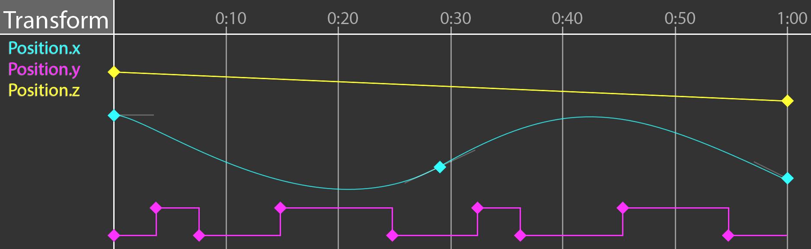
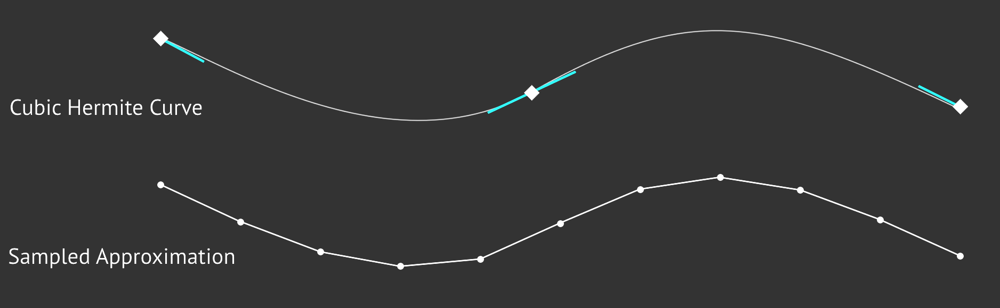
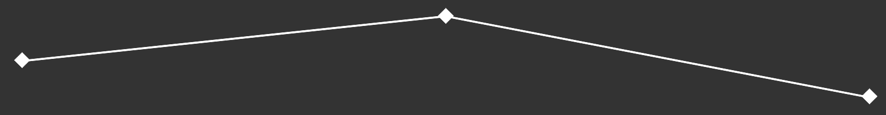
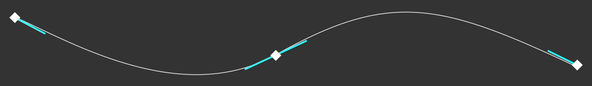

Pose Generation
Let's explore what it takes to generate a pose from an animation for a game character. A Pose is a hierarchy of Transform objects. This hierarchy acts like a skeleton for the character. When an animation clip is sampled, it reutrns a Pose. The returned pose is a snapshot of the skeleton at a specific time of the animation clip.
An animation clip is made up of animation tracks. Every animated joint in a skeleton (every Transform in the resulting pose) can be animated by a track. Each track is made up of several frames. A frame contains a time, a value as well as incoming and outgoing tangents. The tangents are needed to build curves out of Cubic Hermite Splines. The image below shows the relationship between each component required to generate a pose.
The most important part of pose generation is the animation tracks. Digital Content Creation (DCC) tools like Maya, 3DS Max or Blender allow animators to author animation by defining tracks. Unity's Animation View is a great example of an animation curve editor. These tracks express change over time using curves. An animation track often looks similar to this:
An animator usually animated characters in a DCC tool using curves similar to what is shown in the above picture. In the early 2000's, most game animation pipelines would use an offline tool which evaluates the animation curves at set intervals and stores the values.
At playback time, the game would linearly interpolate between the sampled values. This sampled animation method is faster, but it takes more memory. The approximated curve is generally close enough to be indiscernible at playback time. A comparison of a cubic hermite spline and it’s sampled counterpart is shown in the image below
Interpolation types
When defining an animation curve, generally, it follows one of three interpolation methods: Constant, Linear or Cubic. Cubic curves can be expressed using any cubic equation like Bézier (what Blender does) or Hermite splines (what Maya does). We’re going to use Hermite splines to represent cubic curves.
A constant curve keeps its value the same until the next keyframe, sometimes this type of curve is called a step curve. Visually, a constant curve looks like this:
A linear curve interpolates between two frames in a linear fashion (a straight line). If the samples of a linear track are close enough it can start to approximate other types of curves. A linear curve looks like this:
With cubic curves, we can express complex curves using very little data. A cubic curve looks like this (tangents are the lines coming out of the keyframes):
Interpolation type granularityThe granularity of the interpolation type is up to you to decide. The animation system built in Hands-On C++ Game Animation Programming defines the interpolation type per track. This means a vector track will use the same interpolation for all it's components.